Logopedista
Rúa Figueroa 1, 3 36002 Pontevedra
Graduado en Logopedia pola Universidade da Coruña (UDC). Tiven a oportunidade de traballar en centros clínicos, onde colaborei na avaliación e intervención de nenos con diferentes trastornos da linguaxe e a comunicación. Considérome unha persoa responsable, con vocación por axudar e moitas ganas de seguir aprendendo e mellorando como profesional.
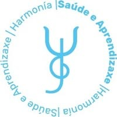
Harmonía Saúde e Aprendizaxe | Pontevedra
Xornada parcial
Centro de Atención Temperá e Logopedia Infantil Mónica Vilameá | A Coruña
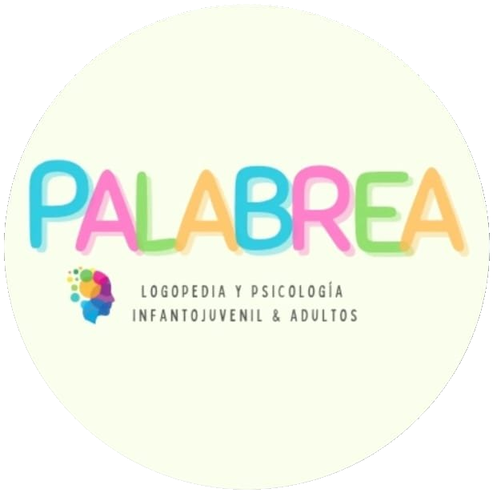
Palabrea Logopedia | A Coruña
Hospital Ribera Juan Cardona | Ferrol
Universidade da Coruña (UDC)
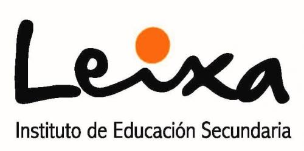
I.E.S Leixa | Ferrol
Realización de prácticas no Hospital Ribera Juan Cardona.
I.E.S As Mariñas
Instituto Superior de Psicoloxía e Educación (ISPEDUC)
Instituto Superior de Psicoloxía e Educación (ISPEDUC)
Infosal
Medicarama
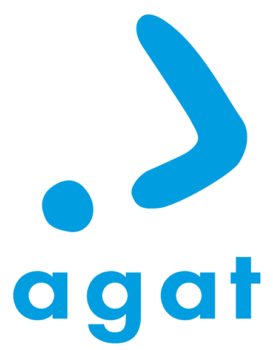
Federación Española de Asociacións de Profesionais de Atención Temperá (GAT) e Asociación Galega de Atención Temperá (AGAT) · A Coruña
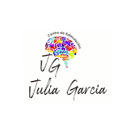
Patricia Vázquez, Centro de Estimulación Julia García · Vilagarcía de Arousa
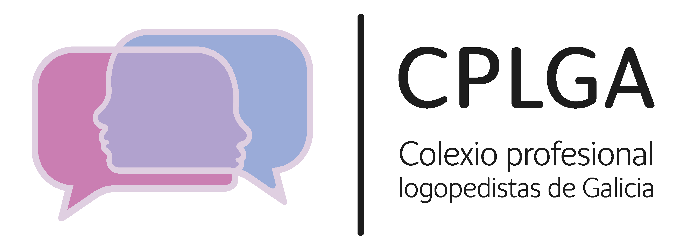
Colexio Profesional de Logopedistas de Galicia (CPLGA) · Santiago de Compostela
Carmen Vázquez López (Fundación Bata) · Vilagarcía de Arousa
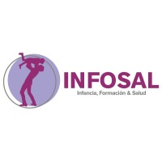
Infosal
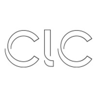
Col·legi de Logopedes de Catalunya
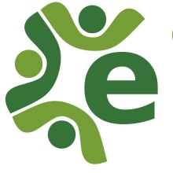
Centro Engloba
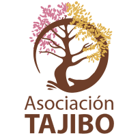
Asociación Tajibo
Patricia Vázquez Rodríguez, Centro Julia García
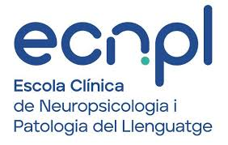
ECNPL
Traballo en equipo
Coordinación con equipo interdisciplinar
Intelixencia emocional
Capacidade de adaptación
Escoita activa
Responsabilidade
Empatía